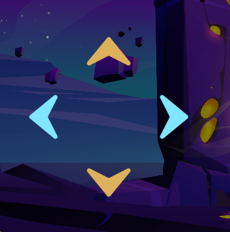

Ao decidir qual mapa será explorado, você deverá escolher o trimestre que deseja. Já dentro do trimestre, você poderá navegar pelas atividades pelos botões azuis, e pelos trimestres pelos botões amarelos

Meu nome é Lara, tenho 18 anos e estou no meu ultimo ano do ensino médio,
atualmente ainda estou pensando muito em que fazer, mas sonho em trabalhar
com arte, que é o que mais amo. Algo que tenho certeza, é que eu não
conseguiria ter um trabalho monótomo, isso me enlouqueceria, alem de que
seria dificil me manter acordada… Já tentei, não dá. Eu não tenho um circulo
social muito grande e nem sou muito sociavel, então diria que eu não tenho
tanta participação socialmente.
Clique aqui